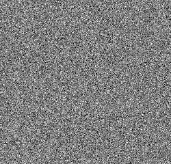

Fig 1. (a) image 1. (b) image 2. (c) stitching result.
The OpenCV library (Open Source Computer Vision Library) is a powerful library designed for computer vision process. This library can be used across different platforms and is freely available under the open-source Apache 2 License. It is written in C++ but it also provides a Python interface. In this tutorial, we will use various build-in functions provided by OpenCV to detect, match keypoints and transform images.
Create a new python environment with opencv-python 4.5,
tqdm, and ipython by executing the following
command.
(base) C:\Users\%USERNAME%> conda create --name opencv -c conda-forge opencv=4.5 tqdm ipythonTest your installation, check the OpenCV version which should be
something similar to 4.5.x.
(base) C:\Users\%USERNAME%> conda activate opencv
(opencv) C:\Users\%USERNAME%> python -c "import cv2; print(cv2.__version__)"
4.5.3Each time you open the Anaconda propmt, you need to activate this environment in order to use OpenCV.
(base) C:\Users\%USERNAME%> conda activate opencv
(opencv) C:\Users\%USERNAME%> conda activate opencvThe newly created environment is can be found at
C:\Users\%USERNAME%\anaconda3\envs\opencv. If you are using
PyCharm, remember to set your project interpreter as demonstrated in the
SetupPython.html file from the previous Lab tutorial.
# set project interpreter of PyCharm to
C:\Users\%USERNAME%\anaconda3\envs\opencv\python.exeOpen your Terminal app and create a new python environment with
opencv-python 4.5, tqdm, and
ipython by executing the following command.
$ conda create --name opencv -c conda-forge opencv=4.5 tqdm ipythonTest your installation, check the OpenCV version which should be
something similar to 4.5.x.
$ conda activate opencv
$ python -c "import cv2; print(cv2.__version__)"
4.5.3Each time you open the Anaconda propmt, you need to activate this environment before using OpenCV.
$ conda activate opencvThe newly created environment is can be found at
/Users/USERNAME/miniconda3/envs/opencv. If you are using
PyCharm, remember to set your project interpreter as shown in
SetupPython.html file from the previous Lab tutorial.
# set project interpreter of PyCharm to
/Users/USERNAME/miniconda3/envs/opencv/bin/pythonOpenCV offers a set of APIs to make it easy for us to read, write and display images.
The cv2.imread function reads an image and returns it as
an np.ndarray object with a data type of
np.uint8, i.e., 8-bit unsigned integer.
import cv2
import numpy as np
img = cv2.imread('image/md/left.jpg')
type(img) # np.ndarray
img.shape # (1512, 2016, 3) [H, W, C] of the image
img.dtype # dtype('uint8')You had better convert it to floating types before further processing to avoid any possible overflow.
img = np.float32(img)The function cv2.imwrite takes an
np.ndarray object as input and save it to a file. If the
dtype of the array is not np.uint8, the
function will automatically convert it to np.uint8 before
saving.
cv2.imwrite('tmp.jpg', img) # return True, if write successfully.The cv2.imshow function is used to display an image. The
function cv2.waitKey allows users to display a window for
given milliseconds or until any key is pressed.
cv2.imshow("window title", img)
cv2.waitKey(1000) # show the image for 1 seconds before it automatically closes
cv2.waitKey(0) # the window would wait till any key is pressedTo close all windows, you can use the
cv2.destroyAllWindows function. Additionally, calling
cv2.waitKey is necessary to allow OpenCV to update the
windows.
cv2.destroyAllWindows()
cv2.waitKey(1)Convenient utility functions for reading, writing, and displaying
images are available in the code/utils.py file.
from utils import imread, imshow, write_and_show, destroyAllWindows
img = imread('image/md/left.jpg')
imshow('tmp.jpg', img)
write_and_show('tmp.jpg',img)
# give you some time to view all windows before close
destroyAllWindows()
# close immediately
destroyAllWindows(wait_key=False)This brief history and review is summarised by OpenCV-Python tutorials1.
Harris Corner Detection:2
In 1988, Chris Harris and Mike Stephens introduced the Harris Corner Detector in their paper titled ‘A Combined Corner and Edge Detector’. This method was an early attempt to identify corners in images.
SIFT (Scale-Invariant Feature Transform):3
The Harris corner detector is not reliable when the scale of an image changes. So, in 2004, D.Lowe introduced a significant method called Scale-Invariant Feature Transform (SIFT) to overcome this limitation.
SURF (Speeded-Up Robust Features):4
SIFT is known for its accuracy, but it may not be fast enough for some applications. In 2006, Bay, H., Tuytelaars, T. and Van Gool, L, and Van Gool, L. proposed a faster alternative called SURF. As name suggests, it is a speeded-up version of SIFT.
ORB (Oriented FAST and Rotated BRIEF):5
This algorithm was introduced by Ethan Rublee, Vincent Rabaud, Kurt Konolige, and Gary R. Bradski in their paper titled ‘ORB: An efficient alternative to SIFT or SURF’ in 2011. As the title says, it is a good alternative to SIFT and SURF in computation cost, matching performance. Unlike SIFT and SURF, which require payment for their usage due to patent restrictions, ORB is free from any such limitations.
In summary, Harris is one of the earliest corner detection algorithms and contains the basic idea for corner detection. SIFT is the first mature algorithm, although it is slower. SURF is a speeded-up version of SIFT. ORB, on the other hand, is a free alternative to both SIFT and SURF.
However, as of March 2020, the patent for SIFT has expired. This means that SIFT is now free to use. On the other hand, the patent for SURF is still valid at the moment.
In this section, we are going to detect keypoints in two images via the classic SIFT detector, find the corresponding keypoints, calculate the transformation and then align the two images. OpenCV also has APIs for other keypoint detection alogrithm, so once you are familiar with aligning images using SIFT, you can easily explore and test other keypoint detection algorithms as well.
Here are the two example images and the final stitching result:
Fig 1. (a) image 1. (b) image 2. (c) stitching result.
Firstly, it is important to ensure that the images we are working
with have a data type of np.uint8. We can then proceed to
convert them to grayscale since all keypoint detectors in OpenCV can
only handle single-channel images. To process colored images, we have
two options: either convert them to grayscale or perform detection on
each channel individually.
img = imread('image/md/left.jpg')
img = np.uint8(img) # make sure it's np.uint8
img_gray = cv2.cvtColor(img, cv2.COLOR_BGR2GRAY) # to Gray ScaleNext, we detect keypoints in images and generate descriptors for those keypoints via SIFT.
# SIFT
sift = cv2.SIFT_create()
keypoints, descriptors = sift.detectAndCompute(img_gray, mask=None)If N keypoints are detected, the return values will have
the following structure:
keypoints is a list containing N
cv2.KeyPoint objects. Each keypoint object has the
following attributes:
angle: indicates the orientation of the
descriptor.pt: represents the location of the keypoint in the form
of a tuple (x,y).response: signifies the keypoint response, where a
higher value suggests a higher likelihood of being a keypoint. For SIFT,
this is the Difference of Gauss（DoG）response.size: denotes the scale of the keypoint.>>> from pprint import pprint
>>> type(keypoints)
list
>>> p = keypoints[0]
>>> pprint({name: p.__getattribute__(name) for name in dir(p) if not name.startswith('__')})
# You shall see something like this
{'angle': 83.27447509765625,
...,
'pt': (2.505418539047241, 1013.8984375),
'response': 0.01711214892566204,
'size': 2.132431745529175}descriptors is an np.array of size
(N, 128). Each row stores an 128-dimensional descriptor for
the corresponding keypoint.>>> descriptors
array([[ 3., 9., 17., ..., 4., 2., 4.],
[ 39., 5., 7., ..., 0., 1., 6.],
[ 0., 0., 0., ..., 15., 12., 11.],
...,
[ 30., 52., 4., ..., 0., 2., 13.],
[ 0., 0., 0., ..., 4., 2., 136.],
[ 50., 131., 30., ..., 0., 0., 0.]], dtype=float32)To draw the detected keypoints on images, we use the
cv2.drawKeypoints function. By passing the
cv2.DRAW_MATCHES_FLAGS_DRAW_RICH_KEYPOINTS flag as a
parameter, the function will display not only the location but also the
size and orientation of the keypoints.
# draw keypoints
img_keypoints = cv2.drawKeypoints(
image = img,
keypoints = keypoints,
outImage = None,
flags = cv2.DRAW_MATCHES_FLAGS_DRAW_RICH_KEYPOINTS)
write_and_show('results/img_keypoints.jpg', img_keypoints)Here are the detection results for the two example images:


Fig 2. Keypoints detected.
Let’s assume that we have detected keypoints in both image 1 and image 2 and generated their descriptors using the following syntax:
sift = cv2.SIFT_create()
keypoints1, descriptors1 = sift.detectAndCompute(img1_gray, None)
keypoints2, descriptors2 = sift.detectAndCompute(img2_gray, None)The next step is to match keypoints between two images. This is done by finding keypoint pairs from two images with similar descriptors. The descriptor describes what the area around a keypoint looks like. Similar descriptors indicate similar patterns. The similarity of descriptors is measured by their euclidean distance. Assume we have two 128-dimensional keypoint descriptors \(u,v\in\mathbb{R}^{128}\), their distance is defined as \[d(u,v) = \sqrt{\sum_{i=1}^{128}(u_i-v_i)^2}\] Small \(d(u,v)\) value indicates that keypoint \(u\) and \(v\) looks similar. In the matching process, for each keypoint in image 1, we always match it with the most similar keypoint from image 2.
The matching process can be performed using the function
cv2.BFMatcher in OpenCV:
# create matcher
matcher = cv2.BFMatcher_create(crossCheck=True)
# get match
match = matcher.match(
queryDescriptors = descriptors1, # query
trainDescriptors = descriptors2) # train
# Docstring:
# match(queryDescriptors, trainDescriptors[, mask]) -> matches
# . @brief Finds the best match for each descriptor from a query set.The returned valure match is a list of
cv2.DMatch objects, each with the following attributes:
distance: Euclidean distance between two matched
keypoints, calculated using the formula mentioned above..queryIdx: Index of the matched keypoints in
image 1.trainIdx: Index of the matched keypoints in
image 2.>>> type(match)
list
>>> m = match[0]
>>> pprint({name: m.__getattribute__(name) for name in dir(m) if not name.startswith('__')})
{'distance': 236.065673828125,
...,
'queryIdx': 1,
'trainIdx': 17140}“BFMatcher” stands for “Brute-Forch Matcher”. THe Brute-Force matcher is a simple matching algorithm that compares the descriptorss in the first set with all the features in the second set based on distance calculation. The closest match is returned as the result.
However, the BFMatcher algorithm is known to be slow. As an alternative, Fast Library for Approximate Nearest Neighbors (FLANN) is available. FLANN is a fast version of BFMatcher. Its usage is similar to BFMatcher but it offers improved speed.
# create macher
matcher = cv2.FlannBasedMatcher_create()
# get match
match = matcher.match(
queryDescriptors = descriptors1, # query
trainDescriptors = descriptors2) # trainIn some cases, the matching result may contain a significant number of false matches. To mitigate this issue, we can employ the ratio test as described in Lowe’s paper. In Lowe’s ratio test, each keypoint from the first image is matched with a certain number of keypoints (e.g. the two best keypoints) from the second image. If the two matched distances are not sufficiently different, the keypoint is eliminated and not utilized for subsequent calculations.
matcher = cv2.FlannBasedMatcher_create()
# get best two matches
best_2 = matcher.knnMatch(
queryDescriptors = descriptors1,
trainDescriptors = descriptors2,
k = 2)
# Lowe's ratio test
ratio = 0.7
match = []
for m,n in best_2:
if m.distance < ratio*n.distance:
match.append(m)distance measures goodness of the match. We only select
the match with small distance, and remove those with large
distance.
# sort by distance
match = sorted(match, key = lambda x:x.distance)
# take the best 100 matches
match = match[:100]We can visualize all matching keypoints using the
cv2.drawMatches function.
match_draw = cv2.drawMatches(
img1 = img1,
keypoints1 = keypoints1,
img2 = img2,
keypoints2 = keypoints2,
matches1to2 = match,
outImg = None,
flags = cv2.DrawMatchesFlags_NOT_DRAW_SINGLE_POINTS)Fig 3. Matched keypoints.
The final step is to stitch the images together into a single larger image. To do this, we first need to obtain the coordinates of all the matched keypoints.
# get coordinates of matched pairs
keypoints1 = np.array([keypoints1[m.queryIdx].pt for m in match])
keypoints2 = np.array([keypoints2[m.trainIdx].pt for m in match])To ensure that both Image 1 and Image 2 are in the same coordinate system, we need to perform a perspective transform. This involves calculating a transformation matrix based on the corresponding keypoints between the two images, and then applying this transformation to Image 2.
Hereafter, we refer image 2 as source image and image 1 as destination image. Calculate a perspective transform from source to destination image:
src, dst = img2, img1
src_kps, dst_kps = (keypoints2, keypoints1)
T, status = cv2.findHomography(
srcPoints = src_kps,
dstPoints = dst_kps,
method = cv2.USAC_ACCURATE,
ransacReprojThreshold = 3)Not all matched keypoint pairs are correct. Incorrect matches can
result in an inaccurate transformation. . To determine if a match is
accurate or not, we can check if the pairs are sufficiently close after
transformation. This is precisely what the
cv2.USAC_ACCURATE method accomplishes. The
ransacReprojThreshold parameter represents the maximum
allowable projection error for considering a point pair as correct. In
the provided code, the maximum allowed projection error is set to 3
pixels.
The return value status indicates the correctness of
keypoints. status[i]==1 means that src_kps[i]
and dst_kps[i] are considered a correct pair.
The return value T is a \(3\times3\) transformation matrix \[\begin{equation}
T = \begin{bmatrix}
h_{11} & h_{12} & h_{13} \\
h_{21} & h_{22} & h_{23} \\
h_{31} & h_{32} & h_{33} \\
\end{bmatrix},
\end{equation}\] which transforms a point at \((x,y)\) to location \((x', y')\): \[\begin{equation}
\left\{
\begin{matrix}
x' =\dfrac{h_{11}x + h_{12}y + h_{13}}{h_{31}x + h_{32}y + h_{33}}\\
y' =\dfrac{h_{21}x + h_{22}y + h_{23}}{h_{31}x + h_{32}y + h_{33}}
\end{matrix} \right.
\end{equation}\]
We can utilize the cv2.warpPerspective function to apply
the transformation T to image 2.
H, W, _ = img2.shape
W = W*2
new_img2 = cv2.warpPerspective(
src = img2,
M = T,
dsize = (W, H),
dst = np.zeros_like(img2, shape=(H,W)),
borderMode = cv2.BORDER_TRANSPARENT)The parameter dsize is used to specify the size of the
transformed image.
Fig 3. transformed image 2.

Fig 4. resized image 1.
Additionally, we need to pad image 1 with zeros to ensure that it has the same dimensions as the transformed image 2.
# resize img1
new_img1 = np.hstack([img1, np.zeros_like(img1)])The final step is to combine or stack these images together. By directly averaging them, we obtain the following result.
direct_mean = new_img1/2 + new_img2/2
imshow('direct_mean.jpg', direct_mean)
Fig 5. Direct mean.
To take the average only for the overlapped part, and copy the pixel values from either Image 1 or Image 2 for the unoverlapped part, you can accomplish this using the following code snippet:
# smart average
cnt = np.zeros([H,W,1]) + 1e-10 # add a tiny value to avoid ZeroDivisionError
cnt += (new_img2 != 0).any(2, keepdims=True) # any: or
cnt += (new_img1 != 0).any(2, keepdims=True)
# convert to floating number to avoid overflow
new_img1 = np.float32(new_img1)
new_img2 = np.float32(new_img2)
stack = (new_img2+new_img1)/cnt
imshow('stack.jpg', stack)cnt counts the number of images that have a valid pixel
value at location (i,j):
cnt[i,j] is 2, for overlapped part.cnt[i,j] is 1, if only one image have a valid pixel at
(i,j).cnt[i,j] is 0, if no image have a valid pixel at
(i,j).
Fig 5. Smart average.
Last section introduces how to stitch two images into one single
large image. This section will cover how to stitch together image frames
from a video to create a panorama. To start, you need to read all frames
from the image/Vcore.mov video. The function
read_video_frames provided in code/utils.py
can be used for this purpose.
from utils import read_video_frames
video_name = 'image/Vcore.mov'
images, fps = read_video_frames(video_name)In the case of a panorama, its dimensions are typically several times
larger than those of video frames. For this video, we let
(H, W) = (h*4, w*3).
h, w = images[0].shape[:2]
H, W = h*4, w*3
panorama = np.zeros([H,W,3]) # use a large canvasNext, we initialize our panorama by placing the first frame to the canvas. For this video, since V Core is scanned from its bottom right corner, so we place first frame at the bottom right corner of the canvas.
# init panorama
h_start = H-h-h//2
w_start = W-w
panorama[h_start:h_start+h, w_start:w_start+w, :] = images[0]Next, we align all frames to the initial panorama one by one, similar
to what was done in the previous section. We will also keep track of a
cnt variable to record the count for each pixel and a
sum variable to record the sum. To reduce computation, we
can only stitch every forth or sixth frames.
trans_sum = np.zeros([H,W,3])
cnt = np.ones([H,W,1])*1e-10
for img in tqdm(images[::4], 'processing'): # tqdm for showing the progress; Lst[ Initial : End : IndexJump ]
# TODO: write your own code here as last section
# to align img with current panorama
aligned_img = ...
# combine
trans_sum += aligned_img
cnt += (aligned_img != 0).any(2, keepdims=True)
panorama = trans_sum/cnt
# show
imshow('panorama.jpg', panorama)Fig 6. From left to right: initial panorama; stitching half of frames; stitching all frames.

|
= | + |  |
Fig 7. noisy image = scene + noise
A noisy image can be seen as a combination of both the scene and noise components. One approach to reducing noise is capturing multiple images or frames of the same scene and then combining them to obtain a clear image. Let’s assume we have \(n\) images or frames captured for the same scene.
\[ \begin{matrix} \text{img}_1 = \text{scene} + \text{noise}_1 \\ \text{img}_2 = \text{scene} + \text{noise}_2 \\ \vdots\\ \text{img}_n = \text{scene} + \text{noise}_4 \\ \end{matrix} \]
By averaging all the images together, the scene itself will be preserved, while the noises will be smoothed.
\[\begin{align*} \frac{1}{N}\sum_i \text{img}_i &= \text{scene} + \frac{1}{N}\sum_i \text{noise}_i \\ &\approx \text{scene} \end{align*}\]
This is the basic idea of stack denoising. Ideally, if all the scene images are perfectly aligned, the final image will exhibit good performance. However, in reality, the multiple images are often captured from slightly different locations or perspectives. The video may also lack stability, resulting in blurry images when directly stacked. To address this issue, we need to perform two steps in the procedure: 1. Aligning the images (algorithm stabilization). 2. Average the aligned imaged to generate the final denoised image.
If you prefer not to carry a heavy tripod with you at all times, algorithmic stabilization can serve as a viable alternative.
Tripod


Stack denoising can also be use to remove rain drops, if we consider rain drops as a kind of noise. It can produce a better result than applying the median filter. Although the median filter is a single-image deraining technique, it has a drawback of blurring the image. Stack denoising overcomes this limitation by producing a clear, rain-free outcome. However, it requires multiple images as input. The following figures depict the comparison between the results obtained using the median filter and stack denoising.


You are tasked with implementing keypoint detection and matching
using the SIFT algorithm on the provided images
image/left2.jpg and image/right2.jpg. To
accomplish this, apply the following steps in
code/sift.py.
img1 and img2 respectively.results/1.3_img1_keypoints.jpg and
results/1.3_img2_keypoints.jpg. (2 points)results/1.4_match.jpg.This
process should encompass the keypoint matching and Lowe’s ratio test to
consolidate accurate matches. (2 points: 1 for matching, 1 for Lowe’s
ratio test)cv2.findHomography function to derive the
transformation matrix from img2 to img1. Print
the transformation matrix and manually copy it into a file named
results/1.5_tf_matrix.pdf. (1 point)img2, and
save the transformed result as results/1.6_transformed.jpg.
(1 point)results/1.7_stack.jpg. (2 point)The second task is to stitch together all the frames from the video
image/winter_day.mov into a panorama. To accomplish this,
please complete the code/panorama.py file.
Steps:
image/winter_day.mov. Initialize the panorama with proper
size and put the first frame of the video in proper position. (1
point)results/2.3_panorama_list.mp4. (0.5 points)results/2.4_panorama.jpg. (0.5 points)The third task involves stabilizing the video
image/rain2.MOVto create a rain-free image by stacking all
the frames together. To complete this task, please follow the steps
below using the code/derain.py file:
Task steps:
image/rain2.MOV. Then, complete the function
orb_keypoint_match() to effectively find and match
keypoints. (0.5 point)results/3.2_stabilized.mp4. Tip: Utilize the
write_frames_to_video function in
code/utils.py, which can aid in saving a list of frames to
a video. (1.0 point)results/3.3_stabilized_mean.jpg. Please note that the
moving car might introduce some blurriness in that area, which can be
disregarded. (0.5 point)
To ensure a successful submission, please include the following components:
results/*.jpg, results/*.pdf).code/*.py) that can effectively reproduce your
results.Additionally, note that the usage of cv2.createStitcher
and cv2.Stitcher_create is not permitted for this
assignment.
The deadline for submission is 23:59 on Nov 24 (Sunday). Multiple submissions are allowed, but only the latest submission will be graded.
Feature Detection and Description – OpenCV-Python Tutorials beta documentation↩︎
Harris, C., & Stephens, M. (1988, August). A combined corner and edge detector. In Alvey vision conference (Vol. 15, No. 50, pp. 10-5244).↩︎
Lowe, D. G. (2004). Distinctive image features from scale-invariant keypoints. International journal of computer vision, 60(2), 91-110.↩︎
Bay, H., Tuytelaars, T., & Van Gool, L. (2006, May). Surf: Speeded up robust features. In European conference on computer vision (pp. 404-417). Springer, Berlin, Heidelberg.↩︎
Rublee, E., Rabaud, V., Konolige, K., & Bradski, G. (2011, November). ORB: An efficient alternative to SIFT or SURF. In 2011 International conference on computer vision (pp. 2564-2571). IEEE.↩︎